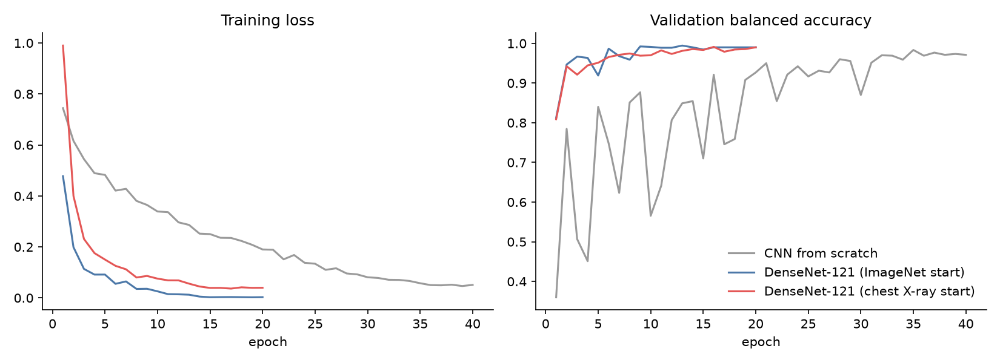

The WHO estimates about 670,000 new TB cases in Pakistan in 2024, 6.3% of the world total and the fifth-highest national burden [1]. Many cases are never diagnosed. Chest radiography is cheap and widely available, and since 2021 the WHO has recommended computer-aided detection (CAD) software as an alternative to a human reader when screening people aged 15 and over [2]. A screening tool must above all not miss TB: the WHO's minimum target for a triage test is 90% sensitivity with 70% specificity [3].
Most student TB projects use the Kaggle "TB Chest X-ray" database [5], in which TB and normal images come from different hospitals and countries. A model can then learn which hospital an image came from instead of which disease it shows, a shortcut documented for pneumonia and COVID-19 models [13, 14]. We avoid this by using TBX11K [4], whose classes share their sources and which includes a class of patients who are sick but do not have TB: the realistic difficulty is separating TB from other lung disease, not from a healthy chest.
Contributions. (1) A controlled comparison of three starting points with identical data, augmentation and schedule. (2) A screening operating point chosen on validation data, and an account of why our first choice of rule failed. (3) A quantitative check of the heatmaps against radiologists' boxes (the pointing game [12]). (4) A deployed, private, in-browser tool with code, weights and data splits published.
CheXNet [6] showed that a DenseNet-121 [7] fine-tuned on ChestX-ray14 can match radiologists on pneumonia. Liu et al. [4] released TBX11K with bounding boxes and reported classification and detection baselines. Rahman et al. [5] report about 98% accuracy on their TB database, partly reflecting the source difference above. TorchXRayVision [8] provides DenseNet-121 weights trained on several large chest X-ray collections (NIH, CheXpert, MIMIC-CXR, PadChest and others), which we use as the domain-specific starting point. Class activation mapping (CAM) [10] and Grad-CAM [11] visualise evidence; the pointing game [12] turns such maps into a number.
TBX11K (simplified Kaggle release, CC BY 4.0) contains 512 × 512 frontal X-rays labelled healthy, sick-but-not-TB, or TB (active or latent), with radiologist boxes around TB regions. The official test labels are not public, so we use TBX11K's labelled validation set as our untouched test set and split its training set 90/10 (stratified, seed 42) into training and validation. The exact file list is in data/splits.csv.
| Split | Healthy | Sick, not TB | TB | Total |
|---|---|---|---|---|
| Train | 2,700 | 2,700 | 539 | 5,939 |
| Validation | 300 | 300 | 60 | 660 |
| Test | 800 | 800 | 200 (with 1–4 boxes each) | 1,800 |
Images are converted to grayscale and resized to 384 × 384: TB lesions are small and lose detail at the 224 px usual for ImageNet models. TB is only 9% of the training set, so the loss weights each class by inverse frequency. Augmentation runs on the GPU per image: small rotations, shifts and zooms, exposure, contrast and gamma changes, noise and blur. We use no horizontal flips: a mirrored X-ray puts the heart on the wrong side, which never occurs in practice.
All three models take a grayscale image in [0, 1], normalise it internally, and end in ReLU → global average pooling → one linear layer. For such a network the class activation map Mc = Σk wck Fk (F the final feature maps, w the linear weights) averages exactly to the class logit [10], so the deployed ONNX model returns probabilities and 12 × 12 maps in one pass, and the browser can draw the heatmap without gradients.
| Setting | Value |
|---|---|
| Input | grayscale, 384 × 384, values in [0, 1] |
| Optimiser | AdamW, weight decay 0.05 |
| Learning rate | 3e-4 (DenseNets), 2e-3 (scratch); 5% linear warm-up then cosine decay |
| Epochs | 20 (DenseNets), 40 (scratch); best epoch by validation balanced accuracy |
| Batch size | 32, bfloat16 mixed precision |
| Loss | cross-entropy, class weights ∝ 1 / frequency (TB ≈ 3.7, others ≈ 0.73) |
| Augmentation (GPU) | rotation ±7°, zoom 0.92–1.12, stretch ±7%, shift ±6%, gamma/contrast/brightness ±15–25%, noise, blur (p = 0.2); no flips |
| Hardware | 1 × NVIDIA L4 (Google Colab); about 51 s per DenseNet epoch |
| Seed | 42 (splits and training) |
Screening rule. A person is referred for a lab test (sputum smear or GeneXpert) when the TB probability is at least a threshold. We fix the threshold at 95% specificity on the 600 non-TB validation X-rays, i.e. about 5% unnecessary referrals, and then read off sensitivity on the test set. The deployed threshold is 0.0070.
| Model | Params | Accuracy | 95% CI | Bal. acc. | Macro F1 | TB AUC | 95% CI | Sens. | Spec. | Pointing game | CPU ms |
|---|---|---|---|---|---|---|---|---|---|---|---|
| CNN from scratch | 2.35M | 96.9% | 96.1%–97.7% | 97.0% | 0.948 | 0.9952 | 0.9921–0.9979 | 98.0% | 94.6% | 34.0% | 246 |
| DenseNet-121, ImageNet start (deployed) | 6.96M | 99.2% | 98.8%–99.6% | 98.4% | 0.987 | 0.9996 | 0.9991–0.9999 | 100.0% | 95.9% | 36.0% | 313 |
| DenseNet-121, chest-X-ray start | 6.95M | 98.3% | 97.7%–98.9% | 97.0% | 0.972 | 0.9965 | 0.9936–0.9984 | 98.0% | 95.8% | 57.5% | 294 |
Starting from chest X-rays instead of ImageNet changed test balanced accuracy by -1.4 points, TB AUC by -0.0031 and the pointing-game hit rate by +21.5 points. The TB AUC confidence intervals do not overlap; the domain-pretrained network does, however, place its evidence inside the doctors' boxes more often. The CNN trained from scratch reaches 97.0% balanced accuracy and a TB AUC of 0.9952, against 98.4% and 0.9996 for the deployed model: pretraining is worth 1.5 points of balanced accuracy here.
Which model to deploy? Our pre-declared rule (best validation balanced accuracy) selects the DenseNet-121, ImageNet start model, while the DenseNet-121, chest-X-ray start model places its evidence inside the radiologists' boxes more often (57.5% vs 36.0%). For a clinical tool, evidence that lines up with radiologists' marks can be worth a small loss in accuracy. We keep the rule rather than re-selecting after seeing test results, and the website ships both models with a switch, so users can compare the two heatmaps on the same X-ray.
| Class | Precision | Recall | F1 | Test images |
|---|---|---|---|---|
| healthy | 1.000 | 0.995 | 0.997 | 800 |
| sick but not tb | 0.986 | 0.998 | 0.992 | 800 |
| tb | 0.985 | 0.960 | 0.972 | 200 |



At the screening threshold the deployed model misses 0 of 200 TB X-rays. It detects 160 of 160 active TB cases (100.0%) and 40 of 40 latent TB cases (100.0%); latent TB leaves subtler, often calcified traces, so the gap is clinically plausible. It refers 16 of 800 healthy and 49 of 800 sick-but-not-TB patients. In the three-class decision the most common confusion is between healthy and sick-but-not-TB (3 healthy called sick, 0 sick called healthy), which matters less for TB screening than confusions involving TB (8 TB called non-TB by the top class, 3 non-TB called TB).
The deployed model is exported to ONNX (opset 17, 28.2 MB) with softmax and CAM inside, and to TorchScript. The website loads it once and runs it in the browser with ONNX Runtime Web (WebAssembly), about a second per X-ray on a laptop; the X-ray never leaves the device, which matters for medical images. The GitHub repository contains the code, the exact splits, all weights with SHA-256 hashes in model_card.json, the executed Colab notebook, and a GitHub Actions workflow that runs predict.py and evaluate.py on 12 bundled labelled X-rays at every push.
git clone https://github.com/zyna-b/lunglens && pip install -r requirements.txt && python evaluate.py
A DenseNet-121 fine-tuned on TBX11K screens chest X-rays for TB with a TB AUC of 0.9996, separates TB from other lung disease, and points at radiologist-marked lesions far more often than chance, while running privately in a browser. The next steps are a test on X-rays from Pakistani hospitals, calibration of the threshold on that population, and lung segmentation to keep the model's attention inside the lungs.